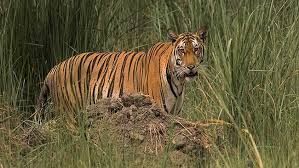
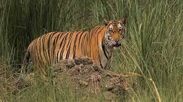

"THOSE WHO PROTECTS AND SAVE OTHER ANIMALS
LEAD THE WAY IN PROTECTING AND SAVIND HUMANITY AND EARTH"
Dudhwa National Park situated in the Lakhimpur Kheri district of Uttar Pradesh, India. Also knows as Dudhwa Tiger Reserve. This represents the best natural forests and grasslands left in the Terai region. The magical landscape of Dudhwa is well known and fabled for its tiger richness. Know about how to reach here. Established in 1958 as a wildlife sanctuary and it declared as a National Park in the year 1977. Many rivers flow in the Dudhwa Tiger Reserve area like as Sharda river by the Kishanpur Wildlife Sanctuary, The Ghagra river inflows Katerniaghat Wildlife Sanctuary and Suheli, Mohana stream flows in Dudhwa National Park. Some of the important taals are Bankey, Kakraha, Amaha, Bhadi, and Bhadraula. The taals, streams, and rivers support a rich variety of turtle species, the Mugger crocodile, the unique and endangered fish-eating crocodile or Gharial as well as the Gangetic dolphin, which are found in Kartaniyaghat. The Dudhwa National Park among other things Katerniaghat Wildlife Sanctuary and Kishanpur Wildlife Sanctuary displays an amazing diversity of flora and fauna. It is the protected areas of the national park and the two wildlife sanctuaries together form the Dudhwa Tiger Reserve under Project Tiger. This park is home to more than 38 species of mammals, 90 species of fish, 450 species of birds and 16 species of reptiles. It is the home of Tiger, Rhinoceros, Swamp deer, Elephant, Sambar, Hog deer, Cheetal and common monkey, etc. The park is also inhabited by the rattling diversity of birds, including Swamp Francolin, Bengal Florican and Great Slaty Woodpecker. Also, you can get to see Sarus cranes, cormorants, heron, Minivets, kingfishers, orioles, and bulbuls.
In order to promote tourism in the region, Dudhwa National Park has been divided into five different zones. These are the marked buffer or core area of the park where visitors can be part of wildlife safari and can enjoy the intriguing behavior of the animals with bare eyes at proximity
Dudhwa became a tiger reserve in 1979. The area was established in 1958 as a wildlife sanctuary for swamp deer. Thanks to the efforts of Billy Arjan Singh the area was notified as a national park in January 1977.[2] In 1987, the park was declared a tiger reserve and brought under the purview of the �Project Tiger�. Together with the Kishanpur Wildlife Sanctuary and the Katarniaghat Wildlife Sanctuary it forms the Dudhwa Tiger Reserve.
Like most of northern India, Dudhwa has an extreme humid subtropical with dry winters (CWa) type of climate. Summers are hot with temperatures rising up to 40 �C (104 �F). During winters from mid-October to mid-March, temperatures hover between 20 and 30 �C (68 and 86 �F). The months of February to April are ideal for visiting the park. Prevalent winds are westerly. The hot wind Loo blows strongly from mid-April up to end of May. Monsoon starting in mid-June and lasting up to September accounts for 90% of the rainfall of 150 cm (59 in). Temperatures range from between a minimum of 9 �C (48 �F) in winter to a maximum of up to 45 �C (113 �F) in peak summer.
The area of the park falls within the Upper Gangetic plains and is a vast alluvial plain ranging in altitude from 150 m (490 ft) in the farthest southeast to 182 metres (597 ft) in the extreme north. The park's mosaic of high forest interspersed with grasslands is characteristic of the Terai ecosystems in India and the area is, probably, the last prominent remnant of this type of ecosystem. The forests, especially the sal forests, have always been very dense and can be categorized into northern tropical semi-evergreen forest, northern Indian moist deciduous forest, tropical seasonal swamp forest and northern tropical dry deciduous forest. The main flora comprises sal, asna, shisham, jamun, gular, sehore and bahera. The grasslands comprise about 19% of the park. The wetlands constitute the third major habitat type and include the rivers, streams, lakes and marshes. While many of the major wetlands are perennial with some amount of surface moisture retained round the year, some dry up during hot summer.[2] The park is home to one of the finest forests in India, some of these trees are more than 150 years old and over 70 ft (21 m) tall.
Major attractions of Dudhwa National Park are the tigers (population 58 in 2014)[citation needed] and swamp deer (population over 1,600). Billy Arjan Singh successfully hand-reared and reintroduced zoo-born tigers and leopards into the wilds of Dudhwa. Some rare species inhabit the park. Hispid hare, earlier thought to have become extinct, was rediscovered here in 1984. In March, 1984 Indian rhinoceros was reintroduced into Dudhwa from Pobitora Sanctuary in Assam and Nepal.[3] The other animals to be seen here include swamp deer, sambar deer, barking deer, spotted deer, hog deer, sloth bear, ratel, jackal, civets, jungle cat, fishing cat, leopard cat. Dudhwa National Park is a stronghold of the barasingha. Around half of the world's barasinghas are present in Dudhwa National Park.[citation needed] Smaller than the sambar deer, the barasinghas have 12 antlers that collectively measure up to 100 cm (39 in). One can spot herd of these rare animals passing through open grasslands. These animals are smaller than sambar deer and weigh around 180 kg. Due to their slightly woolly, dark brown to pale yellow cloak, the grasslands acts as the perfect camouflage.
The park has rich bird life, with over 350 species, including the swamp francolin, great slaty woodpecker and Bengal florican. Dudhwa also boasts a range of migratory birds that settle here during winters. It includes among others, painted storks, black and white necked storks, sarus cranes, woodpeckers, barbets, kingfishers, minivets, bee-eaters, bulbuls and varied night birds of prey. There are also drongos, barbets, cormorants, ducks, geese, hornbills, bulbuls, teal, woodpeckers, heron, bee-eaters, minivets, kingfishers, egrets, orioles, painted storks, owls. Dudhwa's birds in particular are a delight for any avid bird watcher where bengal florican is most popular between bird watchers. The marshlands are habitat for about 400 species of resident and migratory birds including the swamp francolin, great slaty woodpecker, Bengal florican, plenty of painted stork, sarus crane, several species of owl, Asian barbet, woodpecker and minivets. Much of the park�s avian fauna is aquatic in nature and found around Dudhwa�s lakes such as Banke Tal.[citation needed] The endangered white-rumped vulture has been sighted in a group of 115 individuals.
 
